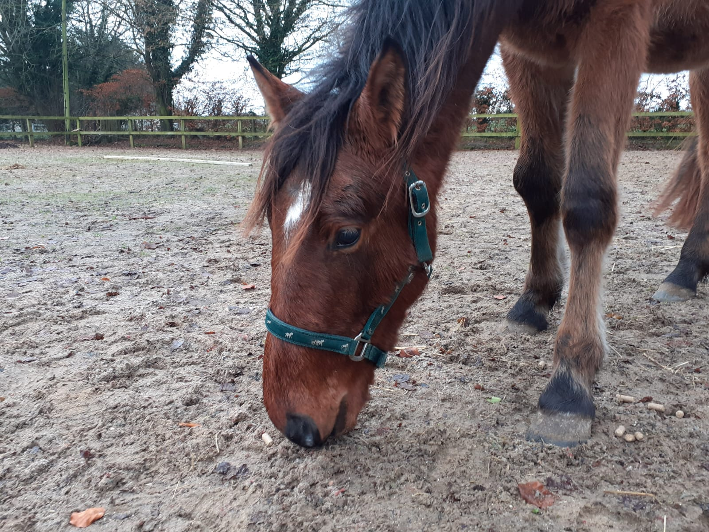

Dieses fand dann in Irland statt. Dort habe ich ein Jahr lang ehrenamtlich mit dem Tierschutz,genauer gesagt My Lovely Horse Rescue gearbeitet. Das ist eine Stunde westlich von Dublin entfernt.
Website My Lovely Horse RescueArbeitszeiten
Arbeitszeiten wurden von den ehrenamtlichen Arbeitern vorort selbst eingeteilt. In der woche hatte man im Regelfall zwei freie Tage zur Verfügung. Man konnte sich diese aber auch aufsparen und dann z.B. eine Woche in Dublin machen. Arbeitszeiten waren von 9 Uhr bis 12 Uhr , von 13 Uhr bis 15 Uhr und von 18 Uhr bis 19 Uhr .
Arbeiten
Morgen wurde gefüttert und Wasser aufgefüllt und teilweise schon gemistet.Mittags wurde dann nur gemistet und Abneds nur noch mal gefüttert. Durch die unterschiedlichen Tiere auf der Farm wurde die Arbeit erst interessant, kaum jemand kann behaupten er hat mit Schweinen gearbeitet. Oder Ziegen das Pfötchen geben beigebracht.
Tiere auf der Farm
- Pferde
- Esel
- Ziegen
- Schafe
- Schweine
- Hühner
- Hunde
Hier einen kurzen Einblick in die täglich Interaktion mit den Tieren:
